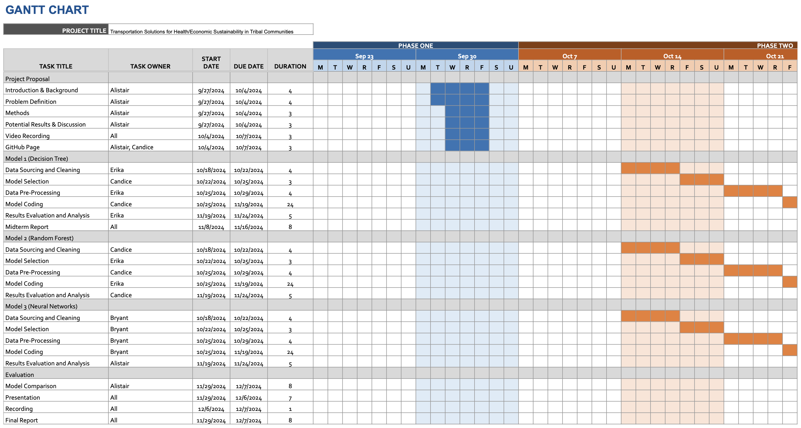
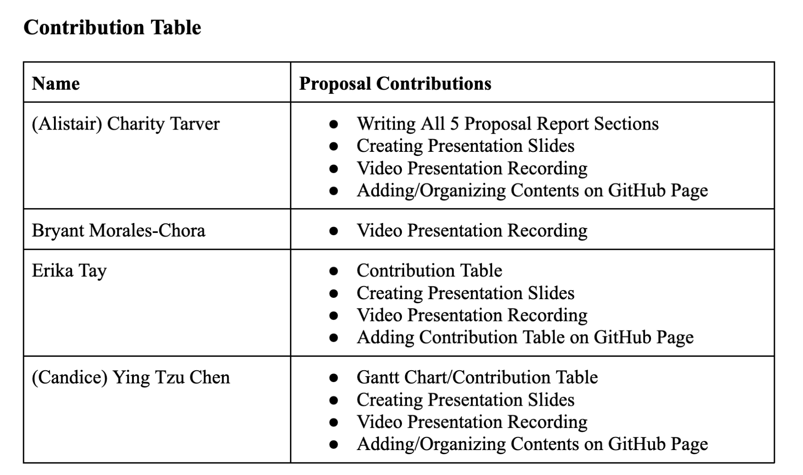

Members:
- (Alistair) Charity Tarver
- Bryant Morales Chora
- Erika Tay
- (Candice) Ying Tzu Chen
Project Proposal: Midterm Proposal ->
Introduction/Background:
Safe drinking water is a fundamental right, yet many Native American communities struggle to ensure water quality. Research indicates serious health risks from contaminants, such as lead for instance, which can lead to developmental disorders and increased cancer risks [1]. The "2021 Report to the Congress of the United States on Sanitation Deficiencies for Indian Homes and Communities" reveals many tribal households lack reliable access to clean water, heightening public health concerns [2]. Environmental health initiatives emphasize urgent need for improved water, with continued posed risks [3]. Our data set consists of, the USGS National Water Information System (NWIS), the Water Quality Portal, and many more cross referenced with tribal water dependency locations using the Bureau of Indian Affairs resources to assess geographic areas.
Problem Definition:
The absence of effective predictive tools for water quality damages the ability of Native American communities and policymakers to respond to contamination events. Traditional monitoring methods often fail to provide timely alerts about rising pollutant levels, resulting in delayed responses, threatening public health, and highlighting the need for technological solutions enhancing water safety.
This proposal aims to develop a machine learning model using neural networks to predict levels of specific water pollutants in sources relied upon by Native American communities. By leveraging historical data and environmental variables, the model seeks to identify trends and potential spikes in contamination. Such capabilities will empower communities to take proactive measures, reducing health risks, and thereby improving the overall well-being of the populations.
Data Preprocessing Methods:
- Data Cleaning: Removing duplicate entries is essential so the model learns from varied examples. Duplicates can mislead the training process, resulting in inaccurate predictions about water quality.
- Normalization: This step adjusts all data features to a similar scale. It prevents any one factor, like a particular pollutant, from overly influencing the model’s predictions, leading to more balanced and accurate forecasts.
- Data Splitting: The dataset is divided into training and testing portions. This allows us to evaluate how well the model performs on new, unseen data. Quick and reliable predictions on water quality are crucial for communities to respond effectively to potential health risks.
ML Algorithms/Models:
(Potential) Results and Discussion:
- R-squared (R²): Aim for R² ≥ 0.8, indicating the model explains at least 80% of the variability in toxin levels.
- Root Mean Squared Error (RMSE): Target RMSE < 10 µg/L for pollutants to demonstrate robust predictive capabilities.
- Mean Absolute Error (MAE): Achieve MAE < 5 µg/L for heavy metals like lead and arsenic, ensuring predictive accuracy.
- Enhance Local Monitoring Capacity: Localizing the model will empower communities to engage in ongoing water quality monitoring and decision-making.
References:
- [1] M. Hanna-Attisha et al., "Elevated Blood Lead Levels in Children Associated with the Flint Drinking Water Crisis: A Spatial Analysis of the Flint Water Study," American Journal of Public Health, vol. 106, no. 2, pp. 283-290, 2016. [Online]. Available: https://ajph.aphapublications.org/doi/10.2105/AJPH.2015.303003.
- [2] U.S. Indian Health Service, "2021 Report to the Congress of the United States on Sanitation Deficiencies for Indian Homes and Communities," 2021. [Online]. Available: https://www.ihs.gov/sites/newsroom/themes/responsive2017/display_objects/documents/2021RTCSanitationDeficienciesReport.pdf.
- [3] Centers for Disease Control and Prevention, "Office of Tribal Affairs Addresses Environmental Health in Native American Communities," 2013. [Online]. Available: https://blogs.cdc.gov/yourhealthyourenvironment/2013/11/22/office-of-tribal-affairs-addresses-environmental-health-in-native-american-communities/.
- U.S. Department of Agriculture, "Census of Agriculture," USDA. [Online]. Available: https://www.nass.usda.gov/.
- U.S. Geological Survey, "National Water Information System," USGS. [Online]. Available: https://nwis.waterdata.usgs.gov/nwis/.
Gantt Chart and Contribution Table:
 Link to Github Project
I'm hosted with GitHub Pages.